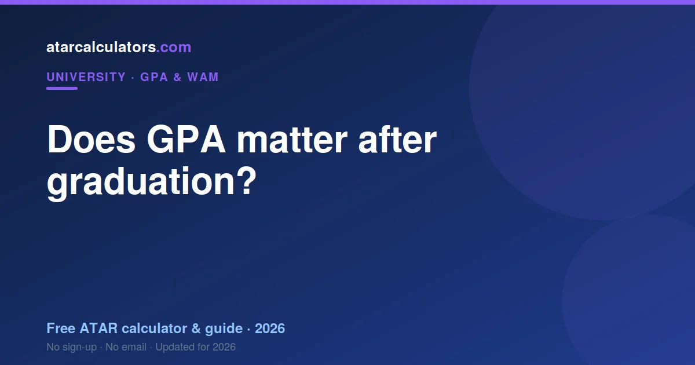

GPA matters most for your first job and for competitive graduate programs, many of which set a credit or distinction cut-off. It also matters for postgraduate study and scholarships. After your first role, though, experience, skills and references count for far more, and most employers stop asking about GPA once you have a track record. So a strong GPA helps you start, but it is not the whole story.
Key takeaways
- GPA matters most for your first job and competitive graduate programs.
- Many graduate programs set a credit or distinction cut-off.
- GPA also matters for postgraduate study and scholarships.
- After your first role, experience matters far more.
- Most employers stop asking once you have a track record.
- A strong GPA helps you start, but is not the whole story.

Your first job
GPA matters most for your very first job out of university. Without work experience to point to, employers use your academic record as a signal, and competitive graduate programs often set a formal cut-off.
So for graduate roles, a strong GPA helps you clear the initial screen and get to an interview. This is the point in your career where GPA carries the most weight, simply because there is little else to go on yet.
Even here, though, GPA is one factor among several. Internships, projects, extracurricular leadership and how you interview all matter, and can offset a GPA that is solid rather than spectacular.
Competitive graduate programs
Many large graduate programs, especially in fields like consulting, finance, law and engineering, set a GPA cut-off such as a credit or distinction average. Meeting it is often necessary to get past the automated screen.
So if you are aiming for these programs, your GPA matters at the application stage. Below the cut-off, it can be hard to get looked at; above it, the rest of your application takes over.
Postgraduate study and scholarships
GPA continues to matter if you plan to study further. Honours, masters, PhD entry and academic scholarships all use your GPA or WAM, often with a distinction average for competitive places. See GPA requirements for postgraduate study.
So for an academic pathway, your GPA has a longer shelf life than for a purely industry one. If postgraduate study is a possibility, it is worth protecting your GPA even if you are unsure.
When GPA starts to fade
Once you have a year or two of work experience, GPA fades quickly. Employers increasingly ask about what you have done, not what you scored. Your projects, results and references become the main evidence of your ability.
By mid-career, most employers do not ask about GPA at all. It has been replaced by a track record that speaks more directly to what you can do. So GPA is a starting signal, not a lifelong label.
What matters more over time
Over time, experience, skills and references outweigh GPA. A candidate who has delivered real work, built relevant skills, and can point to results has evidence that a transcript cannot match.
This is why building experience during your degree, through internships, part-time work and projects, is so valuable. It gives you something beyond GPA to show, and it becomes the main story as your career grows.
If your GPA is lower than you hoped
A lower GPA is not a career sentence. If yours is below where you wanted, focus on the things that will matter more: gaining experience, building skills, and creating a portfolio of real work.
Many successful careers began with a modest GPA, offset by strong experience and initiative. So if your GPA is not what you hoped, put your energy into the evidence that will outweigh it over time.
Balancing GPA and experience
During your degree, the best approach is to protect a solid GPA while building experience, rather than sacrificing one entirely for the other. A credit-to-distinction GPA plus real experience is a strong combination.
So aim for a good GPA to keep doors open early, and gather experience to carry you once GPA fades. Together they cover both the start of your career and the long run.
Know your GPA
Whatever your stage, it helps to know your GPA accurately. Our GPA calculator gives your GPA on the 7-point scale, so you know where you stand for the applications where it counts.
Then focus your energy accordingly: on GPA and academics where they matter, and on experience and skills for the long run.
It depends on the industry
How much GPA matters varies by industry. Competitive graduate programs in fields like consulting, finance and law often screen on GPA, while many other employers care more about your portfolio, skills and how you interview.
Creative, technical and trades-based fields, in particular, tend to weigh demonstrated work over a transcript. So the importance of your GPA depends on where you are applying, not on a single universal rule.
Should you put GPA on your resume?
As a rule of thumb, include your GPA on your resume if it is strong, around a credit-to-distinction average or better, and you are early in your career. A strong GPA is a useful signal when you have little experience to show.
If your GPA is modest, you are generally not required to list it, and your resume space is better spent on experience, projects and skills. Leaving it off is not dishonest; it is a choice about what to emphasise.
When to remove GPA from your resume
Once you have a couple of years of relevant experience, it is usually time to drop GPA from your resume. By then, your work history is a stronger signal, and GPA can make a resume look junior.
So let your experience take the space as your career grows. Employers hiring experienced candidates rarely look for GPA, and its absence on a mid-career resume is entirely normal.
The long-run view
In the long run, GPA is a starting signal, not a lasting label. It helps open the first door, and after that your track record, reputation and skills carry you. Very few careers are defined by a university average.
So take your GPA seriously for the applications where it counts, and then let it go. Building experience and skills is what matters over a career, and it is fully within your control after you graduate.
The bottom line
The bottom line is that GPA matters early and fades fast. It helps you land your first role and clear graduate-program screens, and it lasts longer if you pursue postgraduate study. Beyond that, experience and skills take over.
So give your GPA the effort it deserves while you are studying, and then build the experience that will carry you once it stops being the thing employers ask about.
Where to focus your energy
Given all this, focus your energy where it pays off. While studying, protect a solid GPA and gather experience through internships, part-time work and projects. Early in your career, lead with your GPA and any experience you have; later, lead with your track record.
This staged approach matches effort to what matters at each point. It means your GPA works hardest exactly when it counts, and your growing experience takes over as GPA naturally fades from view.
Common questions
Does GPA matter after graduation?
It matters most for your first job and for competitive graduate programs, many of which set a credit or distinction cut-off. It also matters for postgraduate study and scholarships. After your first role, experience matters far more.
Do Australian employers check your GPA?
Many do for graduate roles, where a GPA cut-off is common. Once you have a year or two of experience, most employers ask about what you have done rather than your GPA, and by mid-career most do not ask at all.
What GPA do graduate programs require?
Competitive graduate programs often set a credit or distinction average as a cut-off. Meeting it is usually needed to pass the initial screen, after which the rest of your application takes over.
Does GPA still matter once you have experience?
Much less. After a year or two of work, experience, skills and references outweigh GPA, and it fades as a signal. It remains relevant mainly for postgraduate study and academic scholarships.